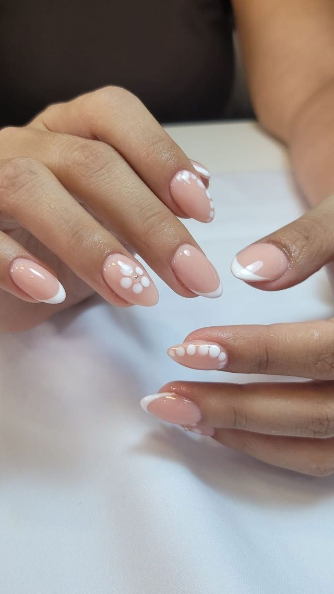
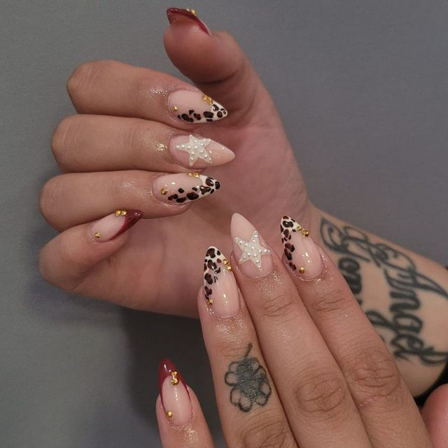
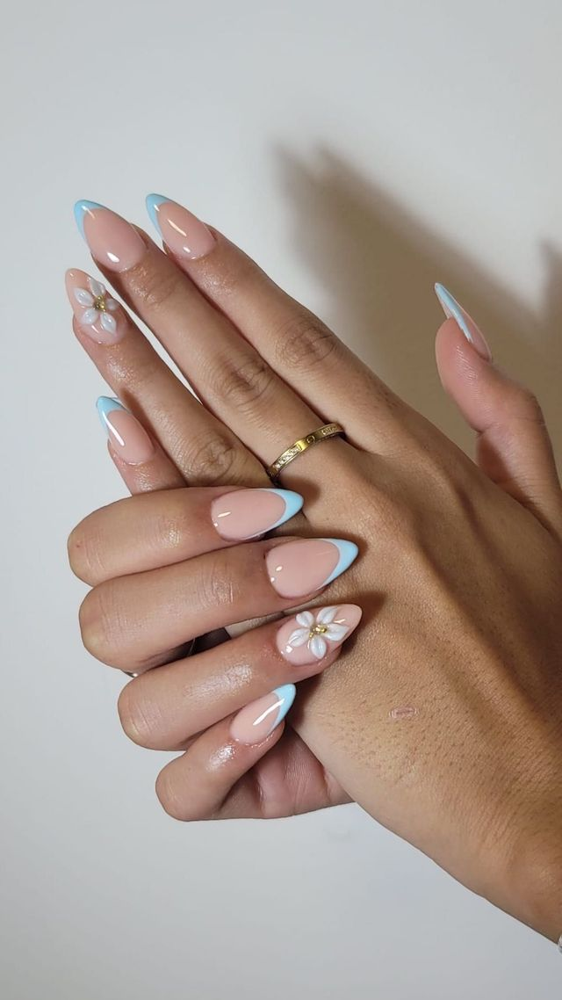

Estudio de uñas · Vecindario
Diseños que empiezan en tu idea
Expertos en realzar la belleza de tus manos.
Manicuras y nail art hechos a mano: acrílicas, kapping, semipermanente y decoración en 3D, con el mismo cuidado por el detalle en cada cita.
★ 4,8 en Booksy (631 reseñas) 4 profesionales Santa Lucía de Tirajana

Quiénes somos
Un estudio de uñas pensado para el detalle
Sindy León lidera, junto a Astrid, Sheila y Milena, un estudio en el corazón de Vecindario donde cada cita se trata como un diseño a medida. No trabajamos sobre un catálogo cerrado: escuchamos lo que quiere la clienta y lo llevamos a la uña, desde una francesa clásica hasta piezas muy elaboradas con pedrería, flores en 3D o línea fina dorada.
"Expertos en realzar la belleza de tus manos."
Esa frase, tomada literalmente de nuestra propia biografía de Instagram, resume cómo trabajamos: con calma, con material de calidad y con la misma atención al detalle tanto en un esmaltado sencillo como en un diseño de tres horas. Las 631 reseñas verificadas en Booksy —el 93% con la puntuación máxima— hablan de eso mismo, cita tras cita.
Conocer al equipoExplora
Todo lo que necesitas saber
Cuatro apartados, cada uno con fotos reales del estudio y la información verificada el 23 de septiembre de 2026.

01
Diseños
Galería filtrable por técnica: francesa, floral, línea dorada y color.
Ver la galería →
02
Servicios
Catálogo agrupado por técnica, con precios y duración reales.
Ver servicios →
03
El estudio
El equipo, las reseñas y lo que encontrarás al llegar.
Conocer el equipo →
04
Contacto
Dirección, horario, mapa y reserva por Booksy o WhatsApp.
Ver ubicación →Portfolio
Un vistazo a nuestro trabajo
Fotos reales de nuestro álbum en Booksy — la galería completa, filtrable por técnica, está en la página de Diseños.
Ver la galería completa


Lo que dicen de nosotras
631 reseñas, siempre verificadas
Una pequeña selección tal y como aparecen publicadas en Booksy, con el servicio y la fecha originales.
"Me ha encantado como siempre. Milena es muy tranquila y detallista."
Teri
"El trato de Milena 10/10 y las uñas siempre perfectas."
Nayara Suárez
"Sheila es una gran profesional. Trató mis uñas con delicadeza y cuidado. Muy agradecida."
Idaira

Reserva tu cita
Ven a conocer el estudio
Reserva online en un par de clics o escríbenos por WhatsApp si tienes cualquier duda. Te esperamos en Calle Primero de Mayo, 129, Vecindario.